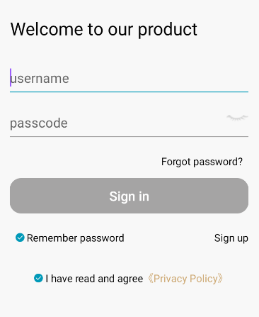
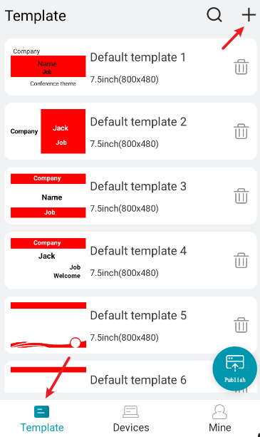
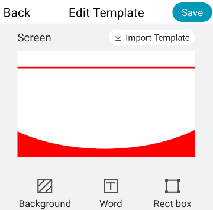
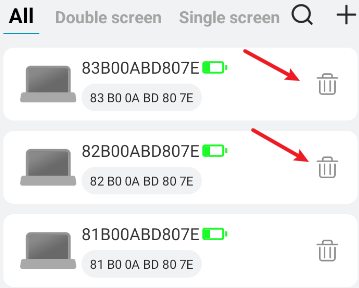
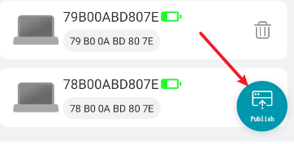
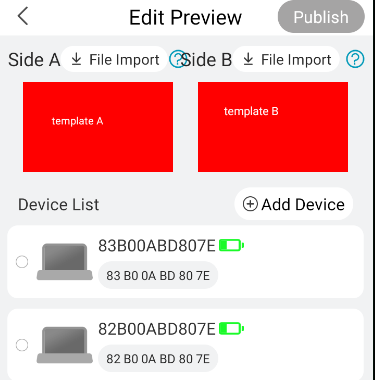
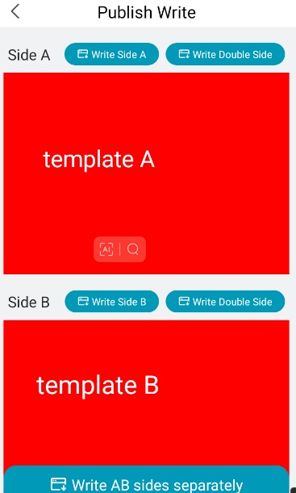
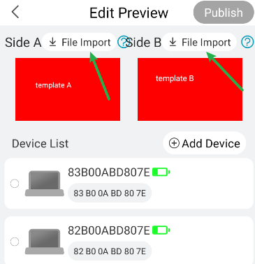
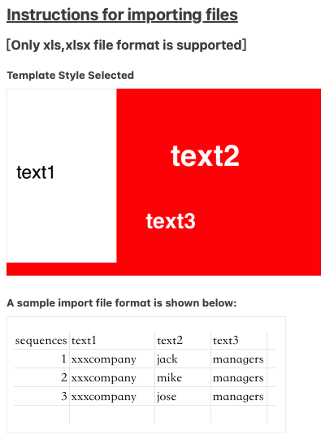

※ Templating and device binding order can be swapped out;
※ File import as an option for batch refreshing different text contents;
1. When logging in for the first time, you need to follow the prompts for user registration.
2. The next time a registered user logs in, he/she can directly enter his/her user name and password to log in.
Note: You need to turn on your phone's Bluetooth and allow storage and photo permissions when you open the app.

1. After logging in the APP, click the bottom navigation bar [Template] to enter the template interface.
2. Click on the default template or saved template to enter the editor, or click on the upper right ["+"] ->> select "7.5-inch electronic desktop" ->>> click on [Next] to enter the template editing interface, modify or edit the template.
3. Template editing:
3.1 Insertion of background
1). Click [Background] ->> Select red, black and white as the background color;
2). Click [Image Selection] to import the image to be used as the background, you can adjust the size of the background image according to the actual needs (it is recommended to set a long and wide dot matrix 800 x 480 when making the background image);
3). Click [<] on the left or [Save] in the upper right corner to exit background editing.
3.2 Text editing
1). Click on [Text] in the middle of the Edit Template interface to enter the text element editing;
2). Click the text input dialog box, enter the text to be edited, adjust the text size, color, font as needed; set up and tap [OK] to return to the template editing, or tap the upper-right corner [Save] to save the template;

3). Delete text elements: Click [Text] to enter the text element editing, select the text element to be deleted to select, click [Cancel] that is, delete the text element and return to the previous interface.
3.3 Rectangular box
1). Click to edit the template interface in the lower right corner [rectangular box], you can insert a rectangular box and edit, you can adjust the width and height of the box, box background color (red, black, white), set up point [OK] to return to the template editing, or point to the upper right corner of the [Save] to save the template;
2). Insert a picture: first insert a rectangular box after adjusting the size of the box, and then click [Image Selection] can be inserted into the picture;
3). Delete the box: Click [Rectangle Box] to enter the box editing interface, click the template to delete the rectangle box selected, and then click [Delete].
3.4 Importing templates
1). Click [Import Template] to import the existing default template of APP or the template that you have edited and saved in front of you, and then enter the modification.
3.5 Saving templates
1). Click the upper right corner [Save] can save the current edited template, you can save as or replace the current template to save, APP comes with a default template can not be replaced.

1. After logging in the APP, click the bottom navigation bar [Device] to enter the device interface.
2. Click [＋] on the top right to bind the table:
2.1 Enter the automatic search for nearby tables, choose to click on the table in the search list, pop-up dialog box named after the tap [Save] to change the table binding success;
2.2 Or click on the [ ] scanning icon in the upper right corner to scan the QR code on your device for binding;
2.3 If you are prompted that the device is already bound when you bind it, you can contact the unbound person's cell phone number via the pop-up to unbind it;
3. Unbundle the device:
Click [Device] in the navigation bar below, the bound device will be in the device list, select the corresponding device that needs to be unbound, click the [ ] delete icon on the rightmost side of the device to unbind the device.

1. Go to Publishing
1.1 Click on the bottom navigation bar [Template] [Templates] [My] to enter any interface, click on the lower right corner [Publish] hover icon ->> select single-screen or dual-screen tableau, enter the Publish [Edit Preview] interface.

2. Import the template to be published
2.1 Click on any area of the A-side or B-side template ->> Enter the [Edit Template] interface ->> Click on [Import Template] to import a saved template, or edit a new template ->> Tap the upper-right [Save] (you can overwrite the existing name templates or save the new name), and return to the [Edit Preview] interface.
2.2 If you are choosing a dual-screen tabletop, here both A and B side templates need to be imported or edited to have templates, before you can enter the publishing interface later.
3. Selection of publishing equipment
3.1 Select the device to be refreshed in the list of bound devices, or [Add Device] to bind other devices; only when the device is connected, the [Publish] button in the upper right corner will light up to publish.
3.2 You can select 1 device or multiple devices for publishing template refresh.

4. Release Write
4.1 If you select [Write to Side A only], the content in the A template will just refresh the information on the A side of the device;
4.2 If you select [Write to Both Sides] on the right side of Side A, the content in the A template will be published to both Sides A and B of the device;
4.3 If you select [Write to B-side only], you will just refresh the information on the B-side of the device with the contents of the B template;
4.4 If you select [Write to Both Sides] on the right side of Side B, the content in the B template is published to both Sides A and B of the device;
If you select [Write to AB side separately], the contents of the A and B templates will be refreshed with the information on the A and B sides of the device respectively.

This APP can use the same template to refresh multiple tables at the same time, and the text information displayed on each table can be different, you need to make the import file in advance to work with it.
1. Create specialized templates
1.1 Make a special template in accordance with the aforementioned template production method, the content of the text elements expressed in code, set the format; batch refresh can only change the text elements, other elements will not be changed; no more than five text elements, the excess will not change.
2. Production of supporting documentation
2.1 Make an excel sheet and write the content to be refreshed to the table cards into the excel sheet. In the table, row 1 and column A are auxiliary rows and columns (cannot be blank), the content in the auxiliary rows and columns will not be recognized and refreshed to the table card, and will be read from the beginning of column B2.
2.2 The table content is up to 5 columns (i.e. up to column F), corresponding to the 5 text elements in the template, and the content from column G onwards will not be recognized.
2.3 The table content is up to 50 rows (i.e. up to 51 rows), which corresponds to a maximum of 50 tables that can be swiped at the same time.

3. Import files
3.1 Save the created excel auxiliary file to your phone;
3.2 In accordance with the aforementioned "template release" process, after importing the special template, click [File Import] ->> select the excel auxiliary file, the bottom of the APP will read out the contents of the excel table;
3.3 Select the content that needs to be refreshed to the tabletop and tap Confirm to exit; at this point, the text on the template will be converted to the first selected content;
3.4 Select the table to be refreshed from the device list; the selected table will be defaulted as unselected if it is not connected, and the content will be refreshed to the next table in order.
4. Refresh table cards
Click [Publish] in the upper-right corner, you will enter the Publishing interface, follow the "Template Publishing" process as mentioned above, and click the corresponding button to refresh the table cards.
